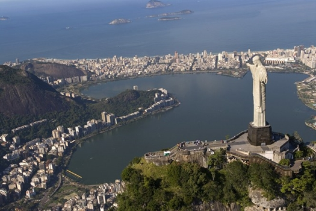

Marcos da Cidade
Alguns dos principais marcos da cidade do Rio de Janeiro são a praia de Copacabana, a estátua do Cristo Redentor no topo do monte Corcovado, a montanha do Pão de Açucar com seus bondinhos, o Maracanã, um dos maiores estádios do mundo, as ciclovias da cidade e os Arcos da Lapa.

Ciclovias da Cidade
O Rio possui uma extensa malha de ciclovias. As principais vias começam na Marina da Glória no centro da Cidade, passando por toda a Zona Sul até o Leblon.

Praia de Copacabana
Copacabana que é também conhecida como "Princesinha do Mar" por causa de uma famosa canção em sua homenagem, é um dos locais mais conhecidos do Brasil e do mundo.
Cristo Redentor
Entre os mais principais pontos turísticos do Rio de Janeiro, está o Corcovado com a estátua do Cristo Redentor e o Pão de Açucar. De cima de ambos tem-se uma vista magnifíca da cidade.

Arcos da Lapa
A Lapa é um local super democrático e rico em diversidade, que abriga todas as tribos do cidade. Lá podemos encontrar bons restaurantes e bares, alguns com música ao vivo, e muita concentração de jovens.

Maracanã
Construído para abrigar a Copa do Mundo de 1950, o Maracanã já foi o maior estádio de futebol do mundo, mas perdeu este status em reforma recente. Visitá-lo, especialmente em dias de jogos, pode ser algo inesquecível.

Pão de Açucar
Localizado no bairro da Urca, o bondinho é uma das principais atrações turísticas da cidade. Liga a Praia Vermelha ao morro da Urca e ao morro do Pão de Açúcar. O bondinho foi cenário do filme 007 contra o Foguete da Morte, de 1979.